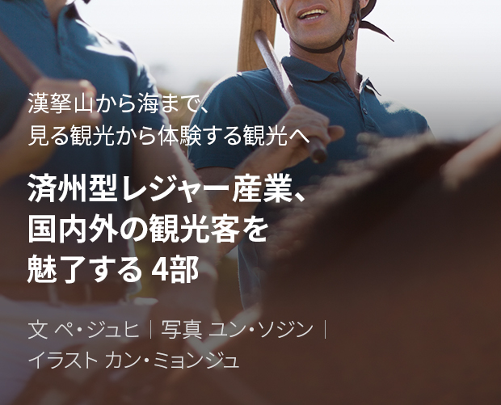
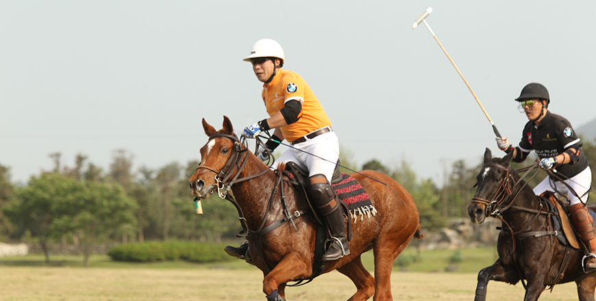
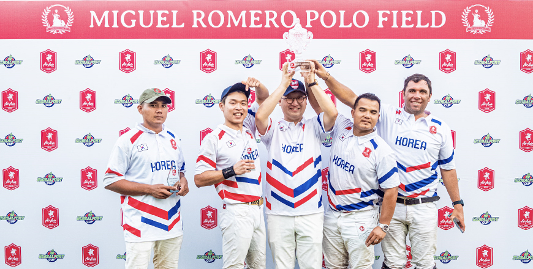
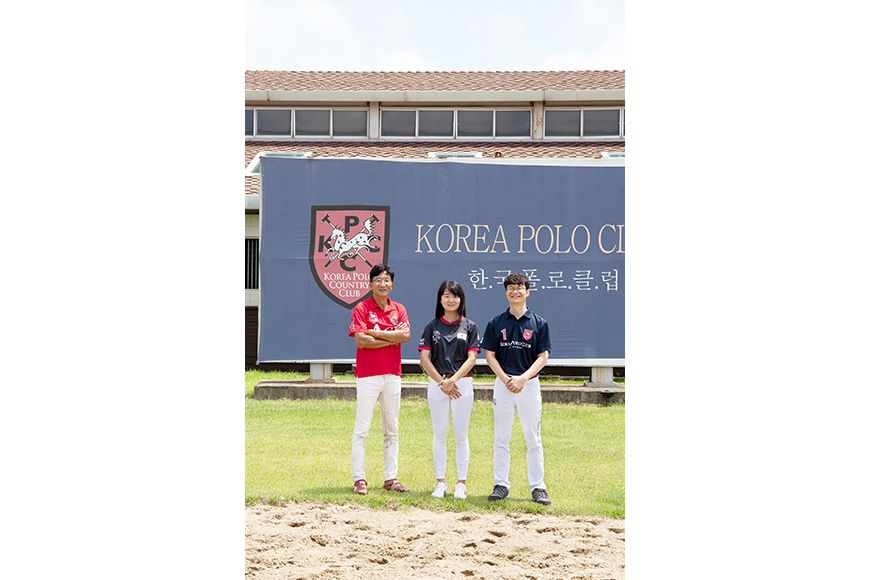

기획취재콘텐츠
- Home
- 제주라이프
- 기획취재콘텐츠
済州型レジャー産業、国内外の観光客を魅了する 4部새로운 글



ポロ文化のすそ野を拡大する中心、韓国ポロカントリークラブ

- ポロ試合の様子 ⓒ韓国ポロカントリークラブ -
ポロは馬を輸送手段として利用し始めた古代にスタートして近代オリンピックの正式種目に選ばれるほど古い歴史性をもつスポーツである。馬に乗って広々とした試合場を走りながらマレットを振り回さなければならない試合の特性上、ものすごい集中力と強い体力を身に着けることができ、紳士的な試合文化のため社交の場としても大きな役割を果たしている。主に海外の王族やスーパーリッチが楽しむスポーツとして広く知られているため拡散スピードは速くないが、世界のポロ人口は徐々に増加する傾向にある。そんな中、韓国ですそ野が広がっている中心には韓国ポロカントリークラブがあるといえる。
- 膨大な規模を誇る韓国ポロカントリークラブのクラブハウスと芝生のポログラウンド ⓒユン・ソジン -
済州道済州市旧左邑杏源里一帯に21万3277m²(約6万4500坪)規模の韓国ポロカントリークラブは、韓国初で唯一のポロクラブである。2005年に設立された韓国ポロカントリークラブは、済州道観光事業の外国人投資第1号企業でもある。2008年に着工したポロ試合場とクラブハウスは約1年半後の2010年6月に竣工、同年8月に営業を始めオープン11年目を迎えた。サッカーグラウンド8面を合わせた規模の芝生のポログラウンドはもちろん、国際規格以上の屋内ポロ試合場、専門人材が配置されて60頭の馬が同時に管理できる2棟の厩舎など、世界どこにも劣らない高いレベルの施設を誇る。
- (左)グラウンドが一目に入るクラブハウスの内部 ⓒユン・ソジン
(右)専門人材が管理している広々として快適な厩舎 ⓒユン・ソジン -
(右)専門人材が管理している広々として快適な厩舎 ⓒユン・ソジン -
会員たちが長期間泊りながらポをが楽しめるクラブハウスとコンドミニアムは、世界的な在日韓国人建築家の伊丹潤の作品。済州の石と木々が金属のような現代的な建築資材と絶妙に組み合わされて完成した建物からは、済州の自然美と安楽さがたっぷり伝わってくる。とくに試合場から眺めるクラブハウスの屋根の向こうに凛々として漢拏山がそびえ立っている様子は、韓国ポロカントリークラブでしか楽しめない素晴らしい景色の中でも最高だといわれる。
韓国ポロカントリークラブの設立当時は、韓国内のポロ人口がいない状況でポロ競技場事業を推進するのは非常にリスクの大きい、観光分野におけるベンチャーの性格をもつ事業だったが、グローバル化が進み社会・文化・経済全般においてグローバルネットワークが必須となった時代の要求に足並みを合わせて、韓国でもポロの導入が必要な時期だという判断の下で長い目で事業を推進したという。とくにポロ試合は会員同士の関係は非常に親密で、ポロを楽しむ人々は各国で経済面・政治面の影響力が大きいケースが多いため、韓国を広報して産業的にも投資を促進する要素が大きいとみられる。
済州という地理的利点がポロの成長と魅力を極大化
- ⓒ韓国ポロカントリークラブ -
韓国ポロカントリークラブ専務のキム・ヒョンピルさんは、済州道をクラブ造成地域として選んだについて「済州道は陸地より冬が短いため試合場の管理や馬を利用するポロ試合に適していて、済州道が保有している自然の魅力が世界を対象にマーケティングを展開し交流を推進するポロクラブの特性を考慮すると、誘因効果が大きいと判断したため」だと話した。とりわけクラブ設立を推進していた2000年代初頭には北東アジア、つまり韓国・日本・中国にはポロクラブが１つもなかったので、中国や日本に潜在するポロ人口を受け入れるのに適した地理的利点も考慮に入れていた。
それに済州道は国際自由都市を標榜していて、それに合わせて外国人の訪問が比較的に容易な形で制度が整備されたことが大きなメリットとなった。今後、第2国際空港が開港するとさらに外国人の誘致がしやすくなるので、今より活発なマーケティング活動が展開できるものとみられる。

- 韓国ポロカントリークラブは、持続的に国際大会を開催することにより済州の魅力を発信し、
海外クラブで開かれる国際試合にも出場して交流を広めている。 ⓒ韓国ポロカントリークラブ -
海外クラブで開かれる国際試合にも出場して交流を広めている。 ⓒ韓国ポロカントリークラブ -
韓国ポロカントリークラブはこれまで7回の国際ポロ試合を開催し、中国・東南アジアポロクラブとも数十回の交流戦を開催しながら続けてきた。また、東南アジアで開催する国際試合にもクラブ会員たちが定期的に出場しているという。本来は下半期にも3~4か国のポロ選手たちとクラブが参加する第8回国際ポロ試合を準備していたが、新型コロナウイルス感染拡大による世界的なパンデミックのため、開催が不明な状態だと説明する。
これまでの大会に参加した外国人ポロ選手および関係者たちは、済州の美しさと韓国ポロカントリークラブの施設レベルを高く評価している。また、済州道がもつ観光資源に非常に満足して具体的に投資などについて興味をもつ人も多いという。海外だけでなく試合を観戦するのは一般人でも無料でできるため、一回でもポロ試合を観戦した人は自然の真ん中にあるポロ試合場の規模に圧倒され、ポロ試合そのもののダイナミックさにたっぷりハマってしまう。済州の有名観光スポットを回る型にはまったツアーにあきれた人なら、異色のエンターテインメントとしてポロ試合を観戦するのも特別な経験になると考えられる。
積極的な広報と体験チャンスの拡大など、ポロ文化の拡散に向けて積極的な努力を
韓国内にポロ文化がなかっただけに、韓国ポロカントリークラブは設立からクラブハウスオープンまでを準備期間、それから10年間の現在までは導入期間とみている。これまでクラブが運営できたのは最初から一緒にしてきた会員たちのポロに対する愛情と支援がベースになっているようだ。今後は東南アジア諸国および中国、日本などでも多くの会員増加を予想している。
また、済州道でも乗馬など馬関係の産業を積極的に育成していくという目標があるので、良い政策が発掘・施行するとポロの成長可能性はさらに大きいとみられる。現在、ポロについての一般の認識や方向は不十分であることが現状だが、韓国ポロカントリークラブは多様な方法で広報を拡大していく計画。具体的な方向性は「ポロ試合がどのようなものなのかを体験することにより広報を拡大すると共に、国内外へのマーケティングを展開して会員数増加に努めていく計画」だという。

- 左からパク・ヨンジュ選手、韓国ポロカントリークラブのユ・ギュル課長、パク・グンソン社長 ⓒ韓国ポロカントリークラブ -
まずはポロ文化を拡散させるために各大学の乗馬同好会などを中心にポロを体験して習うチャンスを拡大し、大学間ポロリーグを作ることを考えていて、済州道の幼少年層を中心にポロ体験チャンスを拡大する計画。訪問を希望している学校や団体に現場体験のチャンスを積極的に提供している。韓国だけでなく、さらにはポロが主要競技団体となっている東南アジア諸国(タイ・ブルネイ・フィリピン・シンガポールなど)および中国市場を中心に海外マーケティングを強化していく計画であることを明らかにした。
韓国ポロカントリークラブの会員期間の長いパク・ヨンジュ選手は、「ポロはスーパーリッチだけが楽しめるスポーツという認識があるが、実際は馬を保有していなくても楽しめて、自分が出場する試合のチャッカ 回数が選択できるなど、思ったより選択肢が多いスポーツ」だと話す。また「身長が一定以上であれば歳が低くても参加でき、老後まで長らく楽しめるスポーツ。老弱男女みんなが楽しめるため、家族スポーツとしても適している。近寄りがたいという偏見を捨てて、多くの方々がポロの魅力を感じてほしい」と強調した。
※ 4) チャッカ(chucker)：ポロ試合を構成する各ラウンドを指す用語で、バスケットボールのクォーター(quarter)に近い概念。ゲームは普通6回のチャッカで構成され、チャッカの間に3分間休憩して中間休憩時間に5分間休む。重要なマッチは8回のチャッカで構成される。
이전글
다음글